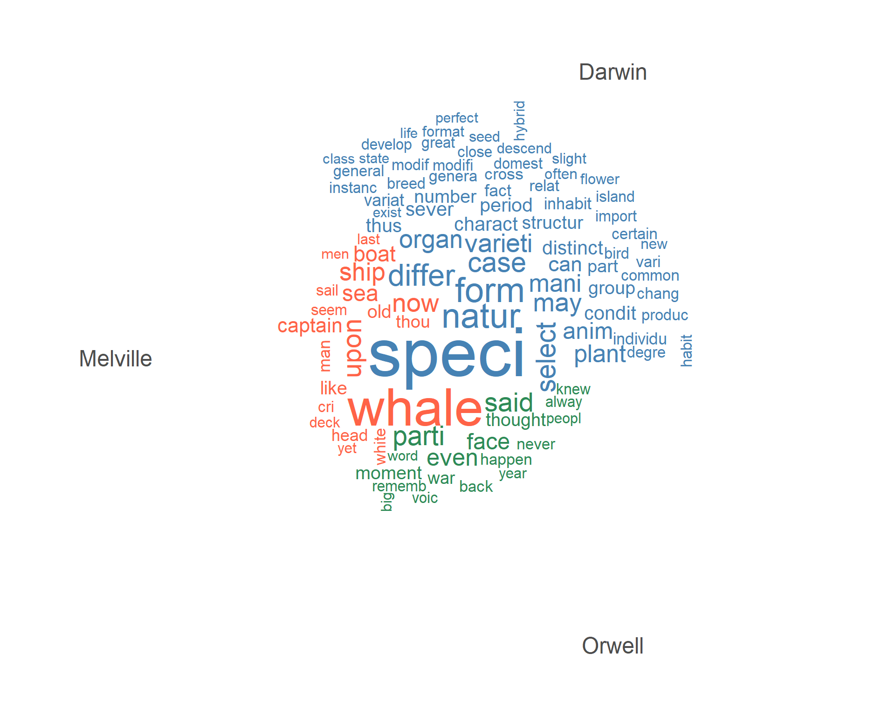
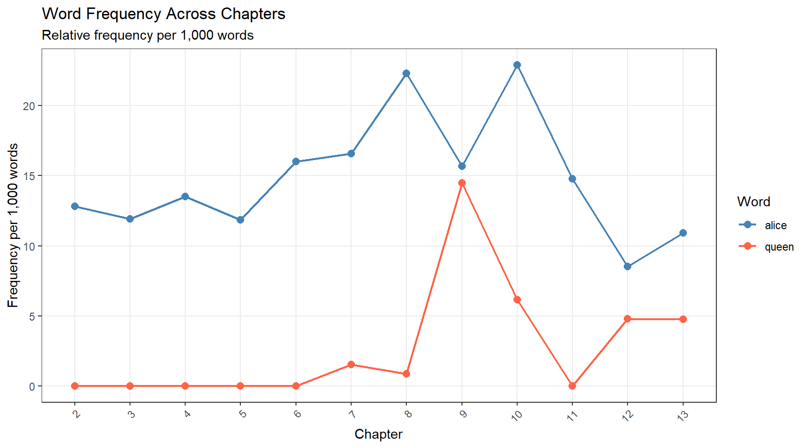
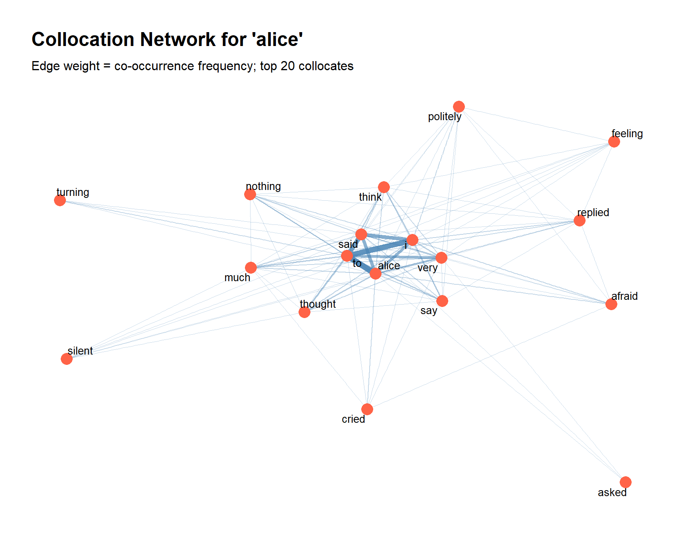
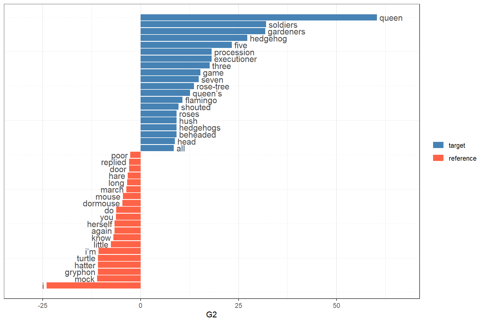

This is Part 2 of the LADAL Introduction to Text Analysis tutorial series. Where Part 1 focused on concepts and theoretical foundations, this tutorial focuses on practical implementation: how to apply selected text analysis methods in R using real corpus data. Each section introduces a method, explains the key decisions involved, demonstrates the code, and provides exercises to consolidate understanding.
The methods covered — concordancing, word frequency analysis, collocation analysis, and keyword analysis — represent the core quantitative techniques of corpus-based text analysis. They are foundational: most more advanced analyses (topic modelling, stylometry, sentiment analysis) build upon or assume familiarity with these basic tools.
Prerequisite Tutorials
Please complete these before working through this tutorial:
Quick Reference — essential functions and workflow summary
Citation
Martin Schweinberger. 2026. Introduction to Text Analysis: Practical Implementation in R. The Language Technology and Data Analysis Laboratory (LADAL), The University of Queensland, Australia. url: https://ladal.edu.au/tutorials/textanalysis/textanalysis.html (Version 2026.03.28), doi: .
Setup and Data
Section Overview
What you’ll learn: How to install and load the required packages, and how the tutorial data is structured
Installing Packages
Code
# Core text analysis framework install.packages("quanteda") install.packages("quanteda.textplots") install.packages("quanteda.textstats") # Data manipulation and visualisation install.packages("dplyr") install.packages("tidyr") install.packages("stringr") install.packages("ggplot2") # Text utilities install.packages("tidytext") install.packages("tokenizers") install.packages("flextable") install.packages("here") install.packages("checkdown")
Loading Packages
Code
library(quanteda) # core text analysis framework library(quanteda.textplots) # visualisation (word clouds, networks) library(quanteda.textstats) # statistical measures library(dplyr) # data wrangling library(tidyr) # data reshaping library(stringr) # string processing library(ggplot2) # plotting library(tidytext) # tidy text mining library(tokenizers) # sentence tokenisation library(flextable) # formatted tables library(here) # portable file paths library(checkdown) # interactive exercises library(quanteda.textstats) # for frequency analysis
Loading All Packages at the Top
Always load all required packages in a single code chunk at the top of your script. This makes dependencies immediately visible, ensures reproducibility (anyone running the script knows exactly what they need), and makes troubleshooting easier when a package is missing or out of date.
Tutorial Data
This tutorial uses Lewis Carroll’s Alice’s Adventures in Wonderland (1865), sourced from Project Gutenberg. The text is in the public domain and provides a convenient single-author literary corpus with recognisable content.
Code
# Load Alice's Adventures in Wonderland from Project Gutenberg # Using the gutenbergr package or pre-saved data # For this tutorial we load a pre-saved plain text version alice_path <- here::here("tutorials", "textanalysis", "data", "alice.rda") # Load the data (a character vector, one element per line) if (file.exists(alice_path)) { alice_raw <-readRDS(alice_path) } else { # If file not present, download directly if (!requireNamespace("gutenbergr", quietly =TRUE)) { install.packages("gutenbergr") } alice_raw <- gutenbergr::gutenberg_download(11)$text } # Quick inspection length(alice_raw)
[1] 2479
Code
head(alice_raw, 8)
[1] "Alice’s Adventures in Wonderland"
[2] "by Lewis Carroll"
[3] "CHAPTER I."
[4] "Down the Rabbit-Hole"
[5] "Alice was beginning to get very tired of sitting by her sister on the"
[6] "bank, and of having nothing to do: once or twice she had peeped into"
[7] "the book her sister was reading, but it had no pictures or"
[8] "conversations in it, “and what is the use of a book,” thought Alice"
Preparing the Text: Splitting into Chapters
For most analyses it is useful to work with the text segmented into meaningful units. We split Alice into chapters, which will serve as our “documents” in document-level analyses:
Code
# Combine all lines, mark chapter boundaries, split into chapters alice_chapters <- alice_raw |># Collapse to single string paste0(collapse =" ") |># Insert a unique marker before each chapter heading # The regex matches: "CHAPTER" + roman numerals (1-7 chars) + optional period stringr::str_replace_all("(CHAPTER [XVI]{1,7}\\.{0,1}) ", "|||\\1 ") |># Lowercase the whole text tolower() |># Split on the chapter boundary marker stringr::str_split("\\|\\|\\|") |>unlist() |># Remove any empty strings (\(x) x[nzchar(stringr::str_trim(x))])() # How many segments? cat("Number of segments:", length(alice_chapters), "\n")
Chapter 2 begins: chapter i. down the rabbit-hole alice was beginning to get v ...
Regex Explained: (CHAPTER [XVI]{1,7}\\.{0,1})
CHAPTER — matches the literal word “CHAPTER”
[XVI]{1,7} — matches 1 to 7 Roman numeral characters (I, V, X, L)
\\.{0,1} — matches an optional period (the \\. escapes the dot; {0,1} makes it optional)
The whole group is wrapped in (...) for capture. We insert ||| before each match to create a unique split point. The {0,1} is equivalent to ? — using the explicit form makes the intent clearer.
The quanteda Workflow
The quanteda package provides a consistent workflow for corpus-based text analysis built around three core objects:
Object
Created by
Contains
Used for
corpus
corpus()
Document collection with metadata
Storage, metadata management, subsetting
tokens
tokens()
Tokenised text — a list of character vectors
Concordancing, collocations, n-grams
dfm
dfm()
Document-Feature Matrix: documents × word frequencies
Frequency analysis, keywords, topic modelling, classification
cat("DFM: ", nfeat(alice_dfm), "unique features (after stopword removal)\n")
DFM: 2753 unique features (after stopword removal)
Concordancing
Section Overview
What you’ll learn: How to extract KWIC (Key Word In Context) displays using quanteda::kwic(), search with regular expressions, and search for multi-word phrases
Key function:quanteda::kwic()
When to use it: At the start of any analysis involving a specific word or phrase; to inspect how terms are used; to extract authentic examples; to identify patterns that quantitative measures cannot reveal
Concordancing is the foundation of corpus-based text analysis. Before drawing quantitative conclusions about how a word behaves, it is essential to look at actual examples and understand the range of contexts in which the word appears. The kwic() function in quanteda produces KWIC displays directly:
Simple Word Search
Code
# Concordance for "alice" — 5-word window on each side kwic_alice <- quanteda::kwic( x = alice_tokens, pattern ="alice", window =5) |>as.data.frame() |> dplyr::select(docname, pre, keyword, post) # How many occurrences? cat("Occurrences of 'alice':", nrow(kwic_alice), "\n")
Occurrences of 'alice': 386
docname
pre
keyword
post
text2
i . down the rabbit-hole
alice
was beginning to get very
text2
a book , ” thought
alice
“ without pictures or conversations
text2
in that ; nor did
alice
think it so _very_ much
text2
and then hurried on ,
alice
started to her feet ,
text2
in another moment down went
alice
after it , never once
text2
down , so suddenly that
alice
had not a moment to
text2
“ well ! ” thought
alice
to herself , “ after
text2
for , you see ,
alice
had learnt several things of
The docname column shows which chapter (document) the occurrence is from. pre is the left context, keyword is the search term, and post is the right context.
Pattern Matching with Regular Expressions
Code
# Find all word forms beginning with "walk" kwic_walk <- quanteda::kwic( x = alice_tokens, pattern ="walk.*", window =5, valuetype ="regex"# enable regular expression matching ) |>as.data.frame() |> dplyr::select(docname, pre, keyword, post) cat("Forms of 'walk':", nrow(kwic_walk), "\n")
Forms of 'walk': 20
Code
# What distinct forms were found? unique(kwic_walk$keyword)
[1] "walk" "walking" "walked"
docname
pre
keyword
post
text2
out among the people that
walk
with their heads downward !
text2
to dream that she was
walking
hand in hand with dinah
text2
trying every door , she
walked
sadly down the middle ,
text3
“ or perhaps they won’t
walk
the way i want to
text4
mouse , getting up and
walking
away . “ you insult
text4
its head impatiently , and
walked
a little quicker . “
text5
and get ready for your
walk
! ’ ‘ coming in
text7
, “ if you only
walk
long enough . ” alice
Three valuetype Options in kwic()
"glob" (default): simple wildcards — * matches any sequence, ? matches any single character. E.g., "walk*" matches walk, walks, walked
"regex": full regular expression syntax — "walk.*" matches the same
"fixed": exact string match — "walk" matches only walk, not walks
For corpus searches, "regex" is the most powerful but also requires care with escaping special characters.
Phrase Search
Code
# Search for the multi-word phrase "poor alice" kwic_pooralice <- quanteda::kwic( x = alice_tokens, pattern = quanteda::phrase("poor alice"), # phrase() enables multi-word search window =6) |>as.data.frame() |> dplyr::select(docname, pre, keyword, post) cat("Occurrences of 'poor alice':", nrow(kwic_pooralice), "\n")
Occurrences of 'poor alice': 11
docname
pre
keyword
post
text2
would go through , ” thought
poor alice
, “ it would be of
text2
once ; but , alas for
poor alice
! when she got to the
text2
no use now , ” thought
poor alice
, “ to pretend to be
text3
off to the garden door .
poor alice
! it was as much as
text3
the right words , ” said
poor alice
, and her eyes filled with
text4
didn’t mean it ! ” pleaded
poor alice
. “ but you’re so easily
text4
any more ! ” and here
poor alice
began to cry again , for
text5
pleasanter at home , ” thought
poor alice
, “ when one wasn’t always
text6
used to it ! ” pleaded
poor alice
in a piteous tone . and
text8
. ” this answer so confused
poor alice
, that she let the dormouse
text10
both sat silent and looked at
poor alice
, who felt ready to sink
When to Use phrase() vs. a Plain Pattern
Without phrase(), a pattern like "poor alice" would be interpreted as two separate patterns. phrase() tells quanteda to look for the words adjacent to each other as a sequence. Use phrase() for:
Multi-word expressions and idioms (by and large, make a decision)
Named entities (Mad Hatter, White Rabbit)
Fixed collocations where word order matters
Sorting Concordances for Pattern Analysis
Sorting KWIC output by the left or right context makes patterns more visible:
Code
# Sort by one word to the right of the keyword (R1) # This groups concordances by what immediately follows "said" kwic_said <- quanteda::kwic( x = alice_tokens, pattern ="said", window =4) |>as.data.frame() |> dplyr::select(docname, pre, keyword, post) |># Extract the first word of the right context dplyr::mutate(R1 = stringr::word(post, 1)) |># Sort by R1 to see what typically follows "said" dplyr::arrange(R1) # Most common words following "said" kwic_said |> dplyr::count(R1, sort =TRUE) |>head(10)
R1 n
1 the 207
2 alice 115
3 to 39
4 , 28
5 in 7
6 nothing 6
7 this 6
8 “ 5
9 . 4
10 : 3
R1
n
the
207
alice
115
to
39
,
28
in
7
nothing
6
this
6
“
5
.
4
:
3
Sorting reveals a pattern immediately: “said” is most often followed by the character names (alice, the) — the classic dialogue attribution pattern “…” said Alice.
Exercises: Concordancing
Q1. What does valuetype = "regex" do in kwic(), and why would you use it instead of the default "glob"?
Q2. You want to find all occurrences of run, runs, ran, and running in a corpus. Which pattern and valuetype combination would work correctly?
Word Frequency Analysis
Section Overview
What you’ll learn: How to build word frequency lists, handle stopwords, visualise frequency distributions, and track word frequency across document sections
When to use it: As one of the first steps in any corpus analysis; for vocabulary profiling; for identifying dominant themes; for comparing texts
Word frequency analysis counts how often each word occurs in a text or corpus. Despite its simplicity, it is one of the most informative first steps in text analysis — the vocabulary profile of a text reveals its themes, register, and style.
Building a Frequency List
Code
# Tokenise Alice, remove punctuationalice_tokens_clean <- quanteda::tokens( quanteda::corpus(paste(alice_raw, collapse =" ")),remove_punct =TRUE,remove_symbols =TRUE,remove_numbers =TRUE)# Create a DFM (no stopword removal yet)alice_dfm_all <- quanteda::dfm(alice_tokens_clean)# Extract frequency table using quanteda.textstatsfreq_all <- quanteda.textstats::textstat_frequency(alice_dfm_all) |>as.data.frame() |> dplyr::select(feature, frequency, rank)cat("Total tokens:", sum(freq_all$frequency), "\n")
The top of the frequency list is dominated by function words (the, and, to, a, of, it, she, was…) — grammatically necessary but semantically light. This is typical of English text and reflects Zipf’s Law: a small number of very frequent words account for a disproportionate share of all tokens.
Removing Stopwords
Stopwords are high-frequency function words that are removed before frequency analysis when the goal is to identify content-bearing vocabulary. The appropriate stopword list depends on the language and the research question:
Now the list shows content words that reflect the novel’s themes: alice, said, queen, time, little, thought, king. The character alice is the most frequent content word — unsurprisingly, since the novel is named after her.
Should You Always Remove Stopwords?
Stopword removal is appropriate when analysing content (what the text is about). It is not appropriate when:
Analysing style (function word frequencies are strong style markers used in authorship attribution)
Studying discourse (function words like but, although, however carry logical structure)
Building language models (function words are necessary for grammar)
Performing concordancing (you usually want to see full context)
Always ask: does removing these words serve my research question?
Visualising Frequency
Bar Plot
Code
freq_nostop |>head(15) |>ggplot(aes(x =reorder(feature, frequency), y = frequency)) +geom_col(fill ="steelblue", width =0.75) +coord_flip() +labs( title ="15 Most Frequent Content Words", subtitle ="Alice's Adventures in Wonderland (stopwords removed)", x =NULL, y ="Frequency" ) +theme_bw() +theme(panel.grid.minor =element_blank())
Word clouds are visually appealing and useful for exploratory work or communicating with non-specialist audiences. However, they have serious limitations as analytical tools:
It is difficult to compare sizes precisely — the visual ranking is approximate
Layout is partly random — words in the centre are not more important
They convey no information about distribution across documents
They can create misleading impressions about relative frequency
For rigorous analysis, always use bar plots or tables rather than word clouds.
Comparison Across Authors
One of the most powerful uses of frequency analysis is comparing vocabulary across different texts or authors:
# Comparison word cloud — shows distinctive vocabulary per text # Create DFM for comparisoncomp_dfm <- comp_corpus |> quanteda::tokens(remove_punct =TRUE,remove_numbers =TRUE ) |> quanteda::tokens_tolower() |> quanteda::tokens_remove(quanteda::stopwords("english")) |> quanteda::tokens_wordstem() |> quanteda::dfm() |> quanteda::dfm_trim(min_docfreq =2)# Only plot if features remainquanteda.textplots::textplot_wordcloud( comp_dfm,comparison =TRUE,max_words =100,color =c("steelblue", "tomato", "seagreen") )

Dispersion: Frequency Across Document Sections
Tracking how word frequency changes across sections reveals narrative or structural patterns:
Code
# Count words and target word occurrences per chapter dispersion_tb <-data.frame( chapter =seq_along(alice_chapters), n_words = stringr::str_count(alice_chapters, "\\S+"), n_alice = stringr::str_count(alice_chapters, "\\balice\\b"), n_queen = stringr::str_count(alice_chapters, "\\bqueen\\b") ) |> dplyr::mutate( # Relative frequency per 1,000 words alice_per1k =round(n_alice / n_words *1000, 2), queen_per1k =round(n_queen / n_words *1000, 2), chapter_f =factor(chapter, levels = chapter) ) |> dplyr::filter(n_words >50) # exclude very short intro segments # Reshape for plotting dispersion_long <- dispersion_tb |> tidyr::pivot_longer( cols =c(alice_per1k, queen_per1k), names_to ="word", values_to ="freq_per1k" ) |> dplyr::mutate( word = dplyr::recode(word, "alice_per1k"="alice", "queen_per1k"="queen") ) ggplot(dispersion_long, aes(x = chapter_f, y = freq_per1k, colour = word, group = word)) +geom_line(linewidth =0.8) +geom_point(size =2.5) +scale_colour_manual(values =c("alice"="steelblue", "queen"="tomato")) +labs( title ="Word Frequency Across Chapters", subtitle ="Relative frequency per 1,000 words", x ="Chapter", y ="Frequency per 1,000 words", colour ="Word" ) +theme_bw() +theme(panel.grid.minor =element_blank(), axis.text.x =element_text(angle =45, hjust =1))

This dispersion plot reveals narrative structure: alice is consistently mentioned throughout, while queen appears mainly from mid-text onwards (reflecting the plot — the Queen of Hearts is introduced later in the story).
Exercises: Frequency Analysis
Q1. You build a frequency list from a news corpus and find that the is the most frequent word (frequency: 84,231). A colleague says this is important evidence that the corpus is primarily about the economy. What is wrong with this reasoning?
Q2. What does a dispersion plot show that a simple total frequency count does not?
Collocation Analysis
Section Overview
What you’ll learn: How to extract and quantify collocations — words that co-occur more than expected by chance — using co-occurrence matrices and association measures
Key concepts: Contingency table, Mutual Information (MI), phi (φ), Delta P (ΔP)
When to use it: When studying phraseological patterns, lexical associations, semantic prosody, or the characteristic usage of a target word
Collocations reveal the hidden patterning of language: every word has characteristic co-occurrence partners, and these partnerships are stable, culturally embedded, and often non-compositional. Strong coffee is a collocation; powerful coffee is not — even though strong and powerful are near-synonyms. Detecting collocations computationally requires statistical comparison: is this word pair’s co-occurrence frequency higher than we would expect if the two words were distributed independently?
The Contingency Table Approach
Collocation strength is measured using a 2×2 contingency table that cross-tabulates the presence and absence of two words:
w₂ present
w₂ absent
w₁ present
O₁₁
O₁₂
= R₁
w₁ absent
O₂₁
O₂₂
= R₂
= C₁
= C₂
= N
Where O₁₁ = both words co-occur in the same context window, O₁₂ = w₁ appears but not w₂, O₂₁ = w₂ appears but not w₁, and O₂₂ = neither appears. N is the total number of co-occurrence opportunities (contexts).
From observed (O) counts we compute expected (E) counts under the assumption of independence: E₁₁ = R₁ × C₁ / N. Association measures compare O₁₁ to E₁₁: if O₁₁ >> E₁₁, the words co-occur more than chance and are likely collocates.
Preparing Sentence-Level Data
For collocation analysis, we compute co-occurrences within sentences (rather than the whole text), so that bank and interest are counted as co-occurring only when they appear in the same sentence:
Code
# Tokenise Alice into sentences, then clean alice_sentences <-paste(alice_raw, collapse =" ") |> tokenizers::tokenize_sentences() |>unlist() |> stringr::str_replace_all("[^[:alnum:] ]", " ") |> stringr::str_squish() |>tolower() |> (\(x) x[nchar(x) >5])() # remove very short fragments cat("Number of sentences:", length(alice_sentences), "\n")
Number of sentences: 1585
Building the Co-occurrence Matrix
Code
# Create a Feature Co-occurrence Matrix (FCM) # FCM counts how often any two words appear in the same sentence coll_fcm <- alice_sentences |> quanteda::tokens() |> quanteda::dfm() |> quanteda::fcm(tri =FALSE) # tri=FALSE: count both (w1,w2) and (w2,w1) # Convert to long-format data frame coll_basic <- tidytext::tidy(coll_fcm) |> dplyr::rename(w1 = term, w2 = document, O11 = count) cat("Unique word pairs:", nrow(coll_basic), "\n")
Unique word pairs: 274011
Computing Association Measures
Code
# Compute the full contingency table and association measures coll_stats <- coll_basic |> dplyr::mutate(N =sum(O11)) |> dplyr::group_by(w1) |> dplyr::mutate(R1 =sum(O11), O12 = R1 - O11, R2 = N - R1) |> dplyr::ungroup() |> dplyr::group_by(w2) |> dplyr::mutate(C1 =sum(O11), O21 = C1 - O11, C2 = N - C1, O22 = R2 - O21) |> dplyr::ungroup() |> dplyr::mutate( # Expected co-occurrence under independence E11 = R1 * C1 / N, E12 = R1 * C2 / N, E21 = R2 * C1 / N, E22 = R2 * C2 / N, # Association measures MI =log2(O11 / E11), # Mutual Information X2 = (O11 - E11)^2/E11 + (O12 - E12)^2/E12 + (O21 - E21)^2/E21 + (O22 - E22)^2/E22, # Chi-square phi =sqrt(X2 / N), # Effect size (phi) DeltaP = (O11/(O11 + O12)) - (O21/(O21 + O22)) # Directional measure )
Collocates of a Target Word
Code
# Find collocates of "alice" alice_colls <- coll_stats |> dplyr::filter( w1 =="alice", (O11 + O21) >=10, # w2 must occur at least 10 times in the corpus O11 >=5# must co-occur at least 5 times with alice ) |># Bonferroni-corrected significance filter via chi-square dplyr::filter(X2 >qchisq(0.99, 1)) |># Keep only attraction collocates (observed > expected) dplyr::filter(O11 > E11) |> dplyr::arrange(dplyr::desc(phi))
w1
w2
O11
E11
phi
MI
DeltaP
alice
said
179
87.539
0.010
1.032
0.010
alice
thought
60
22.086
0.009
1.442
0.004
alice
very
86
53.588
0.005
0.682
0.003
alice
turning
7
1.622
0.005
2.110
0.001
alice
replied
14
5.127
0.004
1.449
0.001
alice
afraid
10
3.200
0.004
1.644
0.001
alice
asked
5
1.176
0.004
2.089
0.000
alice
to
334
276.236
0.004
0.274
0.006
alice
i
163
128.033
0.003
0.348
0.004
alice
politely
5
1.404
0.003
1.832
0.000
alice
cried
10
3.962
0.003
1.336
0.001
alice
much
32
19.441
0.003
0.719
0.001
Interpreting the Association Measures
O11: Raw co-occurrence count — how many times the pair actually appeared together
E11: Expected count under independence — how often they would co-occur if word choice were random
MI (Mutual Information): Measures how much information one word provides about the other. MI > 0 means positive association; MI >> 0 means strong association. Biased toward rare words.
DeltaP: Directional measure — how much does seeing w1 increase the probability of seeing w2? A positive value means w2 is more likely given w1.
For a corpus linguistics audience, phi and Delta P are generally the most interpretable measures. MI is commonly used in computational linguistics but can inflate the importance of rare words.
Visualising Collocations as a Network
Code
library(ggraph) library(igraph) # Get top 20 collocates and build a co-occurrence matrix for them top_colls <- alice_colls |> dplyr::arrange(dplyr::desc(phi)) |>head(20) |> dplyr::pull(w2) # Build FCM restricted to alice + its top collocates coll_network_data <- alice_sentences |> quanteda::tokens() |> quanteda::dfm() |> quanteda::dfm_select(pattern =c("alice", top_colls)) |> quanteda::fcm(tri =FALSE) # Convert to igraph for ggraph net <- igraph::graph_from_adjacency_matrix( as.matrix(coll_network_data), mode ="undirected", weighted =TRUE, diag =FALSE) # Plot ggraph::ggraph(net, layout ="fr") + ggraph::geom_edge_link(aes(width = weight, alpha = weight), colour ="steelblue") + ggraph::geom_node_point(colour ="tomato", size =5) + ggraph::geom_node_text(aes(label = name), repel =TRUE, size =3.5) + ggraph::scale_edge_width(range =c(0.3, 2.5)) + ggraph::scale_edge_alpha(range =c(0.3, 0.9)) +labs( title ="Collocation Network for 'alice'", subtitle ="Edge weight = co-occurrence frequency; top 20 collocates" ) +theme_graph() +theme(legend.position ="none")

The network plot reveals the semantic neighbourhood of alice in the novel: her characteristic actions (said, thought, went), the characters she interacts with (queen, king, cat, rabbit), and the emotions associated with her (poor).
Exercises: Collocation Analysis
Q1. What does it mean when O11 >> E11 in a collocation analysis?
Q2. Why is Mutual Information (MI) biased toward rare words, and what is the practical implication?
Keyword Analysis
Section Overview
What you’ll learn: How to identify words that are statistically over-represented in one corpus compared to a reference corpus — the method of keyword analysis
When to use it: When you want to characterise what makes one text or corpus distinctive; for comparing genres, authors, time periods, or groups
Keyword analysis identifies words that are key — statistically over-represented in a target corpus compared to a reference corpus. A keyword is not just a frequent word; it is a word whose frequency in the target corpus cannot be explained by its base rate in language generally (as captured by the reference corpus). Keywords characterise what is unusual, distinctive, or topically specific about a text.
The Keyword Analysis Logic
Like collocation analysis, keyword analysis uses a contingency table:
Target corpus
Reference corpus
Word present
O₁₁
O₁₂
Other words
O₂₁
O₂₂
The null hypothesis is that the word’s relative frequency is the same in both corpora. Statistical tests (log-likelihood, chi-square, Fisher’s exact test) evaluate whether the observed difference is larger than expected by chance.
Setting Up: Target and Reference Corpora
Code
# We will compare two chapters of Alice as a simple example # Target: Chapter 8 (the Queen's croquet ground — "Off with their heads!") # Reference: all other chapters combined # Identify which chapters are which cat("Chapter 8 begins:", substr(alice_chapters[9], 1, 80), "\n")
Chapter 8 begins: chapter viii. the queen’s croquet-ground a large rose-tree stood near the entran
Code
# Target: chapter 9 (index 9 = chapter 8 after the preamble) target_text <- alice_chapters[9] # Reference: all other chapters reference_text <-paste(alice_chapters[-9], collapse =" ") # Create a two-document corpus with a grouping variable kw_corpus <- quanteda::corpus( c(target_text, reference_text) ) docvars(kw_corpus, "group") <-c("target", "reference")
Computing Keyness
Code
# Build DFM grouped by target vs reference kw_dfm <- kw_corpus |> quanteda::tokens(remove_punct =TRUE) |> quanteda::dfm() |> quanteda::dfm_group(groups = group) # Compute keyness using log-likelihood (G2) — recommended for keyword analysis kw_results <- quanteda.textstats::textstat_keyness( x = kw_dfm, target ="target", measure ="lr"# log-likelihood ratio (G2) )
feature
G2
p
n_target
n_reference
queen
60.3609
0.0000
31
37
soldiers
32.0409
0.0000
9
1
gardeners
31.8253
0.0000
8
0
hedgehog
27.2322
0.0000
7
0
five
23.3106
0.0000
7
1
executioner
18.1234
0.0000
5
0
procession
18.1234
0.0000
5
0
three
17.6428
0.0000
11
15
game
15.2687
0.0001
7
5
seven
14.8236
0.0001
5
1
rose-tree
13.6309
0.0002
4
0
queen’s
12.6444
0.0004
5
2
flamingo
10.7339
0.0011
4
1
shouted
9.6871
0.0019
5
4
beheaded
9.2133
0.0024
3
0
Visualising Keywords
quanteda.textplots provides a dedicated plot for keyword results:
Code
quanteda.textplots::textplot_keyness( x = kw_results, n =20, # show top 20 on each side color =c("steelblue", "tomato"), # positive / negative keywords show_reference =TRUE)

The plot shows:
Blue bars (left): Keywords — words over-represented in the target chapter
Red bars (right): Negative keywords — words over-represented in the reference (the rest of the novel)
Bar length: Keyness score (log-likelihood G²)
Computing tf-idf
An alternative to log-likelihood keyness is tf-idf weighting, which assigns each word a score reflecting how characteristic it is of each document within the collection:
Code
# Build raw count DFM with one document per chapterchapter_dfm <- quanteda::corpus(alice_chapters) |> quanteda::tokens(remove_punct =TRUE) |> quanteda::dfm()# Apply tf-idf weighting to the raw count DFMtfidf_dfm <- quanteda::dfm_tfidf(chapter_dfm,scheme_tf ="count",scheme_df ="inverse")# Extract top 15 most characteristic words for chapter 9# Convert to a tidy data frame manually — one row per feature per documentchapter9_tfidf <- tfidf_dfm[9, ] |># select chapter 9 row quanteda::convert(to ="data.frame") |># wide → data frame tidyr::pivot_longer(-doc_id,names_to ="feature",values_to ="tfidf") |># wide → long dplyr::filter(tfidf >0) |> dplyr::arrange(dplyr::desc(tfidf)) |>head(15)
feature
tf-idf score
chapter
queen
10.409555
text9
gardeners
8.911547
text9
hedgehog
7.797603
text9
soldiers
7.316220
text9
the
5.840034
text9
five
5.690393
text9
king
5.630717
text9
procession
5.569717
text9
executioner
5.569717
text9
rose-tree
4.455773
text9
seven
4.064567
text9
cat
3.734760
text9
Log-Likelihood vs. tf-idf: When to Use Each
Log-likelihood (G²) compares a target to a specific reference corpus using a significance test. It answers: Is this word’s frequency in my target significantly higher than in my reference? It is the standard method in corpus linguistics keyword analysis and is recommended when you have a clear comparison corpus.
tf-idf computes a weighting for each word in each document relative to the whole collection. It is most useful for information retrieval (finding the most characteristic terms in each document in a collection) and feature extraction for text classification. It does not require a separate reference corpus but is not directly interpretable as a significance test.
For most text analysis research questions (what makes text A distinctive compared to text B?), log-likelihood is the more appropriate method.
Exercises: Keyword Analysis
Q1. Why is the choice of reference corpus critical for keyword analysis?
Q2. A keyword analysis returns the, and, and of as the top keywords (with very high G² scores). What likely caused this, and how should it be addressed?
Quick Reference
Section Overview
A compact reference for the most commonly used functions and workflows in this tutorial
Martin Schweinberger. 2026. Introduction to Text Analysis: Practical Implementation in R. The Language Technology and Data Analysis Laboratory (LADAL), The University of Queensland, Australia. url: https://ladal.edu.au/tutorials/textanalysis/textanalysis.html (Version 2026.03.28), doi: .
@manual{martinschweinberger2026introduction,
author = {Martin Schweinberger},
title = {Introduction to Text Analysis: Practical Implementation in R},
year = {2026},
note = {https://ladal.edu.au/tutorials/textanalysis/textanalysis.html},
organization = {The Language Technology and Data Analysis Laboratory (LADAL), The University of Queensland, Australia},
edition = {2026.03.28}
doi = {}
}
This tutorial was re-developed with the assistance of Claude (claude.ai), a large language model created by Anthropic. Claude was used to help revise the tutorial text, structure the instructional content, generate the R code examples, and write the checkdown quiz questions and feedback strings. All content was reviewed, edited, and approved by the author (Martin Schweinberger), who takes full responsibility for the accuracy and pedagogical appropriateness of the material. The use of AI assistance is disclosed here in the interest of transparency and in accordance with emerging best practices for AI-assisted academic content creation.
---title: "Introduction to Text Analysis: Practical Implementation in R"author: "Martin Schweinberger"date: "2026"params: title: "Introduction to Text Analysis: Practical Implementation in R" author: "Martin Schweinberger" year: "2026" version: "2026.03.28" url: "https://ladal.edu.au/tutorials/textanalysis/textanalysis.html" institution: "The Language Technology and Data Analysis Laboratory (LADAL), The University of Queensland, Australia" description: "This tutorial provides a practical overview of core text analysis methods in R, covering concordancing, word frequency analysis, collocations, keywords, text classification, part-of-speech tagging, named entity recognition, and dependency parsing. It is aimed at researchers in corpus linguistics and digital humanities who want a hands-on introduction to the main computational text analysis methods available in R." doi: ""format: html: toc: true toc-depth: 4 code-fold: show code-tools: true theme: cosmo---```{r setup, echo=FALSE, message=FALSE, warning=FALSE} library(checkdown) library(dplyr) library(ggplot2) library(flextable) options(stringsAsFactors = FALSE) options(scipen = 100) set.seed(42) ```{ width=100% } # Introduction {#intro} { width=15% style="float:right; padding:10px" } This is **Part 2** of the LADAL Introduction to Text Analysis tutorial series. Where Part 1 focused on concepts and theoretical foundations, this tutorial focuses on **practical implementation**: how to apply selected text analysis methods in R using real corpus data. Each section introduces a method, explains the key decisions involved, demonstrates the code, and provides exercises to consolidate understanding. The methods covered — concordancing, word frequency analysis, collocation analysis, and keyword analysis — represent the core quantitative techniques of corpus-based text analysis. They are foundational: most more advanced analyses (topic modelling, stylometry, sentiment analysis) build upon or assume familiarity with these basic tools. ::: {.callout-note} ## Prerequisite Tutorials Please complete these before working through this tutorial: - [Introduction to Text Analysis — Part 1: Concepts and Foundations](/tutorials/introta/introta.html)- [Getting Started with R and RStudio](/tutorials/intror/intror.html)- [Loading, Saving, and Generating Data in R](/tutorials/load/load.html)- [String Processing in R](/tutorials/string/string.html)- [Regular Expressions in R](/tutorials/regex/regex.html)::: ::: {.callout-tip} ## What This Tutorial Covers 1. **Setup** — packages, data, and the quanteda workflow 2. **Concordancing** — KWIC searches, regex patterns, phrase searches 3. **Word Frequency Analysis** — frequency lists, stopwords, visualisation, dispersion 4. **Collocation Analysis** — co-occurrence matrices, association measures, network plots 5. **Keyword Analysis** — comparing corpora, keyness metrics, interpretation 6. **Quick Reference** — essential functions and workflow summary ::: ::: {.callout-note}## Citation```{r citation-callout-top, echo=FALSE, results='asis'}cat( params$author, ". ", params$year, ". *", params$title, "*. ", params$institution, ". ", "url: ", params$url, " ", "(Version ", params$version, "), ", "doi: ", params$doi, ".", sep = "")```:::# Setup and Data {#setup} ::: {.callout-note} ## Section Overview **What you'll learn:** How to install and load the required packages, and how the tutorial data is structured ::: ## Installing Packages {-} ```{r install, eval=FALSE} # Core text analysis framework install.packages("quanteda") install.packages("quanteda.textplots") install.packages("quanteda.textstats") # Data manipulation and visualisation install.packages("dplyr") install.packages("tidyr") install.packages("stringr") install.packages("ggplot2") # Text utilities install.packages("tidytext") install.packages("tokenizers") install.packages("flextable") install.packages("here") install.packages("checkdown") ```## Loading Packages {-} ```{r load_pkgs, message=FALSE, warning=FALSE} library(quanteda) # core text analysis framework library(quanteda.textplots) # visualisation (word clouds, networks) library(quanteda.textstats) # statistical measures library(dplyr) # data wrangling library(tidyr) # data reshaping library(stringr) # string processing library(ggplot2) # plotting library(tidytext) # tidy text mining library(tokenizers) # sentence tokenisation library(flextable) # formatted tables library(here) # portable file paths library(checkdown) # interactive exercises library(quanteda.textstats) # for frequency analysis```::: {.callout-tip} ## Loading All Packages at the Top Always load all required packages in a single code chunk at the top of your script. This makes dependencies immediately visible, ensures reproducibility (anyone running the script knows exactly what they need), and makes troubleshooting easier when a package is missing or out of date. ::: ## Tutorial Data {-} This tutorial uses Lewis Carroll's *Alice's Adventures in Wonderland* (1865), sourced from Project Gutenberg. The text is in the public domain and provides a convenient single-author literary corpus with recognisable content. ```{r load_data, message=FALSE, warning=FALSE} # Load Alice's Adventures in Wonderland from Project Gutenberg # Using the gutenbergr package or pre-saved data # For this tutorial we load a pre-saved plain text version alice_path <- here::here("tutorials", "textanalysis", "data", "alice.rda") # Load the data (a character vector, one element per line) if (file.exists(alice_path)) { alice_raw <- readRDS(alice_path) } else { # If file not present, download directly if (!requireNamespace("gutenbergr", quietly = TRUE)) { install.packages("gutenbergr") } alice_raw <- gutenbergr::gutenberg_download(11)$text } # Quick inspection length(alice_raw) head(alice_raw, 8) ``````{r data_table, echo=FALSE, eval=FALSE} # Display first rows as formatted table head(alice_raw, 8) |> as.data.frame() |> flextable() |> flextable::set_table_properties(width = .75, layout = "autofit") |> flextable::theme_zebra() |> flextable::fontsize(size = 11) |> flextable::set_caption(caption = "First 8 lines of Alice's Adventures in Wonderland.") |> flextable::border_outer() ```## Preparing the Text: Splitting into Chapters {-} For most analyses it is useful to work with the text segmented into meaningful units. We split Alice into chapters, which will serve as our "documents" in document-level analyses: ```{r prep_chapters, message=FALSE, warning=FALSE} # Combine all lines, mark chapter boundaries, split into chapters alice_chapters <- alice_raw |> # Collapse to single string paste0(collapse = " ") |> # Insert a unique marker before each chapter heading # The regex matches: "CHAPTER" + roman numerals (1-7 chars) + optional period stringr::str_replace_all("(CHAPTER [XVI]{1,7}\\.{0,1}) ", "|||\\1 ") |> # Lowercase the whole text tolower() |> # Split on the chapter boundary marker stringr::str_split("\\|\\|\\|") |> unlist() |> # Remove any empty strings (\(x) x[nzchar(stringr::str_trim(x))])() # How many segments? cat("Number of segments:", length(alice_chapters), "\n") cat("Chapter 2 begins:", substr(alice_chapters[2], 1, 60), "...\n") ```::: {.callout-note} ## Regex Explained: `(CHAPTER [XVI]{1,7}\\.{0,1})` - `CHAPTER` — matches the literal word "CHAPTER" - `[XVI]{1,7}` — matches 1 to 7 Roman numeral characters (I, V, X, L) - `\\.{0,1}` — matches an optional period (the `\\.` escapes the dot; `{0,1}` makes it optional) The whole group is wrapped in `(...)` for capture. We insert `|||` before each match to create a unique split point. The `{0,1}` is equivalent to `?` — using the explicit form makes the intent clearer. ::: ## The quanteda Workflow {-} The `quanteda` package provides a consistent workflow for corpus-based text analysis built around three core objects: ```{r quanteda_flow, echo=FALSE} data.frame( Object = c("corpus", "tokens", "dfm"), Created_by = c("corpus()", "tokens()", "dfm()"), Contains = c("Document collection with metadata", "Tokenised text — a list of character vectors", "Document-Feature Matrix: documents × word frequencies"), Used_for = c("Storage, metadata management, subsetting", "Concordancing, collocations, n-grams", "Frequency analysis, keywords, topic modelling, classification") ) |> dplyr::rename("Created by" = Created_by, "Used for" = Used_for) |> flextable() |> flextable::set_table_properties(width = .95, layout = "autofit") |> flextable::theme_zebra() |> flextable::fontsize(size = 11) |> flextable::fontsize(size = 11, part = "header") |> flextable::align_text_col(align = "left") |> flextable::set_caption(caption = "The three core quanteda objects and their relationships.") |> flextable::border_outer() ``````{r quanteda_objects, message=FALSE, warning=FALSE} # Build the three core objects alice_corpus <- quanteda::corpus(alice_chapters) alice_tokens <- quanteda::tokens(alice_corpus, remove_punct = FALSE, remove_symbols = TRUE, remove_numbers = FALSE) alice_dfm <- alice_tokens |> quanteda::tokens_remove(quanteda::stopwords("english")) |> quanteda::dfm() cat("Corpus: ", ndoc(alice_corpus), "documents\n") cat("Tokens: ", sum(ntoken(alice_tokens)), "total tokens\n") cat("DFM: ", nfeat(alice_dfm), "unique features (after stopword removal)\n") ```--- # Concordancing {#concordance} ::: {.callout-note} ## Section Overview **What you'll learn:** How to extract KWIC (Key Word In Context) displays using `quanteda::kwic()`, search with regular expressions, and search for multi-word phrases **Key function:** `quanteda::kwic()`**When to use it:** At the start of any analysis involving a specific word or phrase; to inspect how terms are used; to extract authentic examples; to identify patterns that quantitative measures cannot reveal ::: Concordancing is the foundation of corpus-based text analysis. Before drawing quantitative conclusions about how a word behaves, it is essential to look at actual examples and understand the range of contexts in which the word appears. The `kwic()` function in `quanteda` produces KWIC displays directly: ## Simple Word Search {-} ```{r conc_simple, message=FALSE, warning=FALSE} # Concordance for "alice" — 5-word window on each side kwic_alice <- quanteda::kwic( x = alice_tokens, pattern = "alice", window = 5 ) |> as.data.frame() |> dplyr::select(docname, pre, keyword, post) # How many occurrences? cat("Occurrences of 'alice':", nrow(kwic_alice), "\n") ``````{r conc_simple_show, echo=FALSE, message=FALSE, warning=FALSE} kwic_alice |> head(8) |> flextable() |> flextable::set_table_properties(width = .99, layout = "autofit") |> flextable::theme_zebra() |> flextable::fontsize(size = 11) |> flextable::fontsize(size = 11, part = "header") |> flextable::set_caption(caption = "First 8 concordance lines for 'alice'.") |> flextable::border_outer() ```The `docname` column shows which chapter (document) the occurrence is from. `pre` is the left context, `keyword` is the search term, and `post` is the right context. ## Pattern Matching with Regular Expressions {-} ```{r conc_regex, message=FALSE, warning=FALSE} # Find all word forms beginning with "walk" kwic_walk <- quanteda::kwic( x = alice_tokens, pattern = "walk.*", window = 5, valuetype = "regex" # enable regular expression matching ) |> as.data.frame() |> dplyr::select(docname, pre, keyword, post) cat("Forms of 'walk':", nrow(kwic_walk), "\n") # What distinct forms were found? unique(kwic_walk$keyword) ``````{r conc_regex_show, echo=FALSE, message=FALSE, warning=FALSE} kwic_walk |> head(8) |> flextable() |> flextable::set_table_properties(width = .99, layout = "autofit") |> flextable::theme_zebra() |> flextable::fontsize(size = 11) |> flextable::set_caption(caption = "First 8 concordance lines for words beginning with 'walk'.") |> flextable::border_outer() ```::: {.callout-tip} ## Three `valuetype` Options in `kwic()` - `"glob"` (default): simple wildcards — `*` matches any sequence, `?` matches any single character. E.g., `"walk*"` matches walk, walks, walked - `"regex"`: full regular expression syntax — `"walk.*"` matches the same - `"fixed"`: exact string match — `"walk"` matches only *walk*, not *walks* For corpus searches, `"regex"` is the most powerful but also requires care with escaping special characters. ::: ## Phrase Search {-} ```{r conc_phrase, message=FALSE, warning=FALSE} # Search for the multi-word phrase "poor alice" kwic_pooralice <- quanteda::kwic( x = alice_tokens, pattern = quanteda::phrase("poor alice"), # phrase() enables multi-word search window = 6 ) |> as.data.frame() |> dplyr::select(docname, pre, keyword, post) cat("Occurrences of 'poor alice':", nrow(kwic_pooralice), "\n") ``````{r conc_phrase_show, echo=FALSE, message=FALSE, warning=FALSE} kwic_pooralice |> flextable() |> flextable::set_table_properties(width = .99, layout = "autofit") |> flextable::theme_zebra() |> flextable::fontsize(size = 11) |> flextable::set_caption(caption = "All concordance lines for the phrase 'poor alice'.") |> flextable::border_outer() ```::: {.callout-tip} ## When to Use `phrase()` vs. a Plain Pattern Without `phrase()`, a pattern like `"poor alice"` would be interpreted as two separate patterns. `phrase()` tells `quanteda` to look for the words adjacent to each other as a sequence. Use `phrase()` for: - Multi-word expressions and idioms (*by and large*, *make a decision*) - Named entities (*Mad Hatter*, *White Rabbit*) - Fixed collocations where word order matters ::: ## Sorting Concordances for Pattern Analysis {-} Sorting KWIC output by the left or right context makes patterns more visible: ```{r conc_sort, message=FALSE, warning=FALSE} # Sort by one word to the right of the keyword (R1) # This groups concordances by what immediately follows "said" kwic_said <- quanteda::kwic( x = alice_tokens, pattern = "said", window = 4 ) |> as.data.frame() |> dplyr::select(docname, pre, keyword, post) |> # Extract the first word of the right context dplyr::mutate(R1 = stringr::word(post, 1)) |> # Sort by R1 to see what typically follows "said" dplyr::arrange(R1) # Most common words following "said" kwic_said |> dplyr::count(R1, sort = TRUE) |> head(10) ``````{r conc_sort_show, echo=FALSE, message=FALSE, warning=FALSE} kwic_said |> dplyr::count(R1, sort = TRUE) |> head(10) |> flextable() |> flextable::set_table_properties(width = .45, layout = "autofit") |> flextable::theme_zebra() |> flextable::fontsize(size = 12) |> flextable::set_caption(caption = "Top 10 words immediately following 'said'.") |> flextable::border_outer() ```Sorting reveals a pattern immediately: "said" is most often followed by the character names (*alice*, *the*) — the classic dialogue attribution pattern *"..." said Alice*. --- ::: {.callout-tip} ## Exercises: Concordancing ::: **Q1. What does `valuetype = "regex"` do in `kwic()`, and why would you use it instead of the default `"glob"`?** ```{r}#| echo: false #| label: "CONC_EX_Q1" check_question("It enables full regular expression syntax, giving access to anchors (^, $), character classes ([aeiou]), quantifiers ({n,m}), and other regex constructs that glob wildcards cannot express", options =c( "It enables full regular expression syntax, giving access to anchors (^, $), character classes ([aeiou]), quantifiers ({n,m}), and other regex constructs that glob wildcards cannot express", "It makes the search case-insensitive", "It searches the entire corpus rather than individual documents", "It returns only exact matches, with no wildcards" ), type ="radio", q_id ="CONC_EX_Q1", random_answer_order =TRUE, button_label ="Check answer", right ="Correct! The default valuetype = 'glob' supports simple wildcards: * (any sequence of characters) and ? (any single character). This is sufficient for many searches (walk* matches walk, walks, walked). valuetype = 'regex' unlocks the full power of regular expressions: anchoring (^word matches only at word start), character classes ([aeiou]{2} matches double vowels), alternation (walk|run matches either word), and complex quantifiers. Use regex when glob wildcards cannot express your search pattern precisely.", wrong ="Compare what glob wildcards can do (simple * and ? patterns) with what regex provides. What can regex express that glob cannot?") ```--- **Q2. You want to find all occurrences of *run*, *runs*, *ran*, and *running* in a corpus. Which pattern and valuetype combination would work correctly?** ```{r}#| echo: false #| label: "CONC_EX_Q2" check_question('"\\\\brun(s|ning)?\\\\b|\\\\bran\\\\b" with valuetype = "regex" — covers all four forms using alternation', options =c( '"\\\\brun(s|ning)?\\\\b|\\\\bran\\\\b" with valuetype = "regex" — covers all four forms using alternation', '"run*" with valuetype = "glob" — the * matches any suffix', '"run" with valuetype = "fixed" — fixed matching finds all forms', '"run.*" with valuetype = "regex" — .* matches any suffix including s, ning, etc.' ), type ="radio", q_id ="CONC_EX_Q2", random_answer_order =TRUE, button_label ="Check answer", right ="Correct! This is genuinely tricky. 'run*' with glob and 'run.*' with regex would both match run, runs, running — but NOT ran, which has a completely different stem form (it is an irregular past tense). To catch all four forms you need alternation: either (runs|running|ran|run) or the more elegant \\brun(s|ning)?\\b|\\bran\\b. The fixed valuetype finds only the exact string 'run', not its forms. This illustrates an important point: for languages with irregular morphology, glob/regex patterns based on stem + suffix cannot reliably capture all inflected forms — lemmatisation is often a better solution.", wrong ="Check each option carefully: which patterns would match 'ran'? Remember that 'ran' is an irregular past tense with a different stem, not just 'run' plus a suffix.") ```--- # Word Frequency Analysis {#frequency} ::: {.callout-note} ## Section Overview **What you'll learn:** How to build word frequency lists, handle stopwords, visualise frequency distributions, and track word frequency across document sections **Key functions:** `quanteda::dfm()`, `quanteda::textstat_frequency()`, `tidytext::stop_words`, `ggplot2`**When to use it:** As one of the first steps in any corpus analysis; for vocabulary profiling; for identifying dominant themes; for comparing texts ::: Word frequency analysis counts how often each word occurs in a text or corpus. Despite its simplicity, it is one of the most informative first steps in text analysis — the vocabulary profile of a text reveals its themes, register, and style. ## Building a Frequency List {-} ```{r freq_build, message=FALSE, warning=FALSE} # Tokenise Alice, remove punctuationalice_tokens_clean <- quanteda::tokens( quanteda::corpus(paste(alice_raw, collapse = " ")), remove_punct = TRUE, remove_symbols = TRUE, remove_numbers = TRUE)# Create a DFM (no stopword removal yet)alice_dfm_all <- quanteda::dfm(alice_tokens_clean)# Extract frequency table using quanteda.textstatsfreq_all <- quanteda.textstats::textstat_frequency(alice_dfm_all) |> as.data.frame() |> dplyr::select(feature, frequency, rank)cat("Total tokens:", sum(freq_all$frequency), "\n")cat("Unique types:", nrow(freq_all), "\n")cat("Type-token ratio:", round(nrow(freq_all) / sum(freq_all$frequency), 3), "\n")``````{r freq_all_show, echo=FALSE, message=FALSE, warning=FALSE} freq_all |> head(15) |> flextable() |> flextable::set_table_properties(width = .45, layout = "autofit") |> flextable::theme_zebra() |> flextable::fontsize(size = 12) |> flextable::set_caption(caption = "Top 15 words by frequency (all words, including function words).") |> flextable::border_outer() ```The top of the frequency list is dominated by **function words** (the, and, to, a, of, it, she, was…) — grammatically necessary but semantically light. This is typical of English text and reflects Zipf's Law: a small number of very frequent words account for a disproportionate share of all tokens. ## Removing Stopwords {-} **Stopwords** are high-frequency function words that are removed before frequency analysis when the goal is to identify content-bearing vocabulary. The appropriate stopword list depends on the language and the research question: ```{r freq_nostop, message=FALSE, warning=FALSE} # Remove English stopwordsalice_dfm_nostop <- alice_tokens_clean |> quanteda::tokens_remove(quanteda::stopwords("english")) |> quanteda::dfm()freq_nostop <- quanteda.textstats::textstat_frequency(alice_dfm_nostop) |> as.data.frame() |> dplyr::select(feature, frequency, rank) ``````{r freq_nostop_show, echo=FALSE, message=FALSE, warning=FALSE} freq_nostop |> head(15) |> flextable() |> flextable::set_table_properties(width = .45, layout = "autofit") |> flextable::theme_zebra() |> flextable::fontsize(size = 12) |> flextable::set_caption(caption = "Top 15 content words after stopword removal.") |> flextable::border_outer() ```Now the list shows content words that reflect the novel's themes: *alice*, *said*, *queen*, *time*, *little*, *thought*, *king*. The character *alice* is the most frequent content word — unsurprisingly, since the novel is named after her. ::: {.callout-tip} ## Should You Always Remove Stopwords? Stopword removal is appropriate when analysing *content* (what the text is about). It is **not** appropriate when: - Analysing *style* (function word frequencies are strong style markers used in authorship attribution) - Studying *discourse* (function words like *but*, *although*, *however* carry logical structure) - Building language models (function words are necessary for grammar) - Performing concordancing (you usually want to see full context) Always ask: does removing these words serve my research question? ::: ## Visualising Frequency {-} ### Bar Plot {-} ```{r freq_barplot, message=FALSE, warning=FALSE, fig.width=8, fig.height=5} freq_nostop |> head(15) |> ggplot(aes(x = reorder(feature, frequency), y = frequency)) + geom_col(fill = "steelblue", width = 0.75) + coord_flip() + labs( title = "15 Most Frequent Content Words", subtitle = "Alice's Adventures in Wonderland (stopwords removed)", x = NULL, y = "Frequency" ) + theme_bw() + theme(panel.grid.minor = element_blank()) ```### Word Cloud {-} ```{r freq_wordcloud, message=FALSE, warning=FALSE, fig.width=8, fig.height=6} alice_dfm_nostop |> quanteda::dfm_trim(min_termfreq = 5) |> quanteda.textplots::textplot_wordcloud( max_words = 120, max_size = 8, min_size = 1.5, color = c("steelblue", "tomato", "seagreen", "orange", "purple") ) ```::: {.callout-warning} ## Word Clouds: Use with Caution Word clouds are visually appealing and useful for exploratory work or communicating with non-specialist audiences. However, they have serious limitations as analytical tools: - It is difficult to compare sizes precisely — the visual ranking is approximate - Layout is partly random — words in the centre are not more important - They convey no information about distribution across documents - They can create misleading impressions about relative frequency For rigorous analysis, always use bar plots or tables rather than word clouds. ::: ## Comparison Across Authors {-} One of the most powerful uses of frequency analysis is comparing vocabulary across different texts or authors: ```{r freq_compare, message=FALSE, warning=FALSE} # load three texts darwin <- readRDS(here::here("tutorials/textanalysis/data", "darwin.rda")) |> paste(collapse = " ")melville <- readRDS(here::here("tutorials/textanalysis/data", "melville.rda")) |> paste(collapse = " ")orwell <- readRDS(here::here("tutorials/textanalysis/data", "orwell.rda")) |> paste(collapse = " ")# Create multi-document corpuscomp_texts <- c(darwin, melville, orwell)comp_corpus <- quanteda::corpus( comp_texts, docnames = c("Darwin", "Melville", "Orwell") )``````{r freq_compare_cloud, message=FALSE, warning=FALSE, eval=T, fig.width=10, fig.height=8} # Comparison word cloud — shows distinctive vocabulary per text # Create DFM for comparisoncomp_dfm <- comp_corpus |> quanteda::tokens( remove_punct = TRUE, remove_numbers = TRUE ) |> quanteda::tokens_tolower() |> quanteda::tokens_remove(quanteda::stopwords("english")) |> quanteda::tokens_wordstem() |> quanteda::dfm() |> quanteda::dfm_trim(min_docfreq = 2)# Only plot if features remainquanteda.textplots::textplot_wordcloud( comp_dfm, comparison = TRUE, max_words = 100, color = c("steelblue", "tomato", "seagreen") )```## Dispersion: Frequency Across Document Sections {-} Tracking how word frequency changes across sections reveals narrative or structural patterns: ```{r freq_dispersion, message=FALSE, warning=FALSE, fig.width=9, fig.height=5} # Count words and target word occurrences per chapter dispersion_tb <- data.frame( chapter = seq_along(alice_chapters), n_words = stringr::str_count(alice_chapters, "\\S+"), n_alice = stringr::str_count(alice_chapters, "\\balice\\b"), n_queen = stringr::str_count(alice_chapters, "\\bqueen\\b") ) |> dplyr::mutate( # Relative frequency per 1,000 words alice_per1k = round(n_alice / n_words * 1000, 2), queen_per1k = round(n_queen / n_words * 1000, 2), chapter_f = factor(chapter, levels = chapter) ) |> dplyr::filter(n_words > 50) # exclude very short intro segments # Reshape for plotting dispersion_long <- dispersion_tb |> tidyr::pivot_longer( cols = c(alice_per1k, queen_per1k), names_to = "word", values_to = "freq_per1k" ) |> dplyr::mutate( word = dplyr::recode(word, "alice_per1k" = "alice", "queen_per1k" = "queen") ) ggplot(dispersion_long, aes(x = chapter_f, y = freq_per1k, colour = word, group = word)) + geom_line(linewidth = 0.8) + geom_point(size = 2.5) + scale_colour_manual(values = c("alice" = "steelblue", "queen" = "tomato")) + labs( title = "Word Frequency Across Chapters", subtitle = "Relative frequency per 1,000 words", x = "Chapter", y = "Frequency per 1,000 words", colour = "Word" ) + theme_bw() + theme(panel.grid.minor = element_blank(), axis.text.x = element_text(angle = 45, hjust = 1)) ```This dispersion plot reveals narrative structure: *alice* is consistently mentioned throughout, while *queen* appears mainly from mid-text onwards (reflecting the plot — the Queen of Hearts is introduced later in the story). --- ::: {.callout-tip} ## Exercises: Frequency Analysis ::: **Q1. You build a frequency list from a news corpus and find that *the* is the most frequent word (frequency: 84,231). A colleague says this is important evidence that the corpus is primarily about *the* economy. What is wrong with this reasoning?** ```{r}#| echo: false #| label: "FREQ_EX_Q1" check_question("'the' is a function word (definite article) that appears frequently in all English texts regardless of topic; its frequency reflects English grammar, not the content of the corpus", options =c( "'the' is a function word (definite article) that appears frequently in all English texts regardless of topic; its frequency reflects English grammar, not the content of the corpus", "84,231 is not enough occurrences to draw conclusions", "Frequency lists should only contain nouns and verbs", "The colleague is correct — 'the' is indeed the most important word" ), type ="radio", q_id ="FREQ_EX_Q1", random_answer_order =TRUE, button_label ="Check answer", right ="Correct! Function words like 'the', 'and', 'of', 'in' are among the most frequent words in virtually every English text regardless of topic, genre, or content. Their high frequency reflects the grammatical structure of English, not the subject matter. For content analysis — understanding what a corpus is *about* — stopwords should be removed before examining frequency. The colleague has confused grammatical frequency with content relevance, a very common mistake when people first encounter raw frequency lists.", wrong ="Why is 'the' so frequent in English texts? Is its frequency informative about the topic of the corpus?") ```--- **Q2. What does a dispersion plot show that a simple total frequency count does not?** ```{r}#| echo: false #| label: "FREQ_EX_Q2" check_question("How word frequency varies across different sections or documents — whether a word appears throughout a text or is concentrated in specific parts", options =c( "How word frequency varies across different sections or documents — whether a word appears throughout a text or is concentrated in specific parts", "The total number of unique types in the corpus", "The statistical significance of the word's frequency", "Whether the word is a stopword or content word" ), type ="radio", q_id ="FREQ_EX_Q2", random_answer_order =TRUE, button_label ="Check answer", right ="Correct! A total frequency count collapses all occurrences into a single number — it tells you that a word appears 150 times but not where in the text it appears. A dispersion plot shows the distribution across sections, chapters, documents, or time periods. This reveals whether a word is used consistently throughout (suggesting a pervasive theme or character) or concentrated in specific parts (suggesting a localised topic, plot development, or contextual usage). Two words with identical total frequencies can have completely different distribution patterns.", wrong ="A total count is one number; a dispersion plot is a graph over document sections. What additional dimension does the graph show?") ```--- # Collocation Analysis {#collocations} ::: {.callout-note} ## Section Overview **What you'll learn:** How to extract and quantify collocations — words that co-occur more than expected by chance — using co-occurrence matrices and association measures **Key concepts:** Contingency table, Mutual Information (MI), phi (φ), Delta P (ΔP) **When to use it:** When studying phraseological patterns, lexical associations, semantic prosody, or the characteristic usage of a target word ::: Collocations reveal the hidden patterning of language: every word has characteristic co-occurrence partners, and these partnerships are stable, culturally embedded, and often non-compositional. *Strong coffee* is a collocation; *powerful coffee* is not — even though *strong* and *powerful* are near-synonyms. Detecting collocations computationally requires statistical comparison: is this word pair's co-occurrence frequency higher than we would expect if the two words were distributed independently? ## The Contingency Table Approach {-} Collocation strength is measured using a **2×2 contingency table** that cross-tabulates the presence and absence of two words: | | w₂ present | w₂ absent | | |:-----------------|:----------:|:---------:|:-------:| | **w₁ present** | O₁₁ | O₁₂ | = R₁ | | **w₁ absent** | O₂₁ | O₂₂ | = R₂ | | | = C₁ | = C₂ | = N | Where O₁₁ = both words co-occur in the same context window, O₁₂ = w₁ appears but not w₂, O₂₁ = w₂ appears but not w₁, and O₂₂ = neither appears. **N** is the total number of co-occurrence opportunities (contexts). From observed (O) counts we compute expected (E) counts under the assumption of independence: E₁₁ = R₁ × C₁ / N. Association measures compare O₁₁ to E₁₁: if O₁₁ >> E₁₁, the words co-occur more than chance and are likely collocates. ## Preparing Sentence-Level Data {-} For collocation analysis, we compute co-occurrences within sentences (rather than the whole text), so that *bank* and *interest* are counted as co-occurring only when they appear in the same sentence: ```{r coll_prep, message=FALSE, warning=FALSE} # Tokenise Alice into sentences, then clean alice_sentences <- paste(alice_raw, collapse = " ") |> tokenizers::tokenize_sentences() |> unlist() |> stringr::str_replace_all("[^[:alnum:] ]", " ") |> stringr::str_squish() |> tolower() |> (\(x) x[nchar(x) > 5])() # remove very short fragments cat("Number of sentences:", length(alice_sentences), "\n") ```## Building the Co-occurrence Matrix {-} ```{r coll_matrix, message=FALSE, warning=FALSE} # Create a Feature Co-occurrence Matrix (FCM) # FCM counts how often any two words appear in the same sentence coll_fcm <- alice_sentences |> quanteda::tokens() |> quanteda::dfm() |> quanteda::fcm(tri = FALSE) # tri=FALSE: count both (w1,w2) and (w2,w1) # Convert to long-format data frame coll_basic <- tidytext::tidy(coll_fcm) |> dplyr::rename(w1 = term, w2 = document, O11 = count) cat("Unique word pairs:", nrow(coll_basic), "\n") ```## Computing Association Measures {-} ```{r coll_stats, message=FALSE, warning=FALSE} # Compute the full contingency table and association measures coll_stats <- coll_basic |> dplyr::mutate(N = sum(O11)) |> dplyr::group_by(w1) |> dplyr::mutate(R1 = sum(O11), O12 = R1 - O11, R2 = N - R1) |> dplyr::ungroup() |> dplyr::group_by(w2) |> dplyr::mutate(C1 = sum(O11), O21 = C1 - O11, C2 = N - C1, O22 = R2 - O21) |> dplyr::ungroup() |> dplyr::mutate( # Expected co-occurrence under independence E11 = R1 * C1 / N, E12 = R1 * C2 / N, E21 = R2 * C1 / N, E22 = R2 * C2 / N, # Association measures MI = log2(O11 / E11), # Mutual Information X2 = (O11 - E11)^2/E11 + (O12 - E12)^2/E12 + (O21 - E21)^2/E21 + (O22 - E22)^2/E22, # Chi-square phi = sqrt(X2 / N), # Effect size (phi) DeltaP = (O11/(O11 + O12)) - (O21/(O21 + O22)) # Directional measure ) ```## Collocates of a Target Word {-} ```{r coll_alice, message=FALSE, warning=FALSE} # Find collocates of "alice" alice_colls <- coll_stats |> dplyr::filter( w1 == "alice", (O11 + O21) >= 10, # w2 must occur at least 10 times in the corpus O11 >= 5 # must co-occur at least 5 times with alice ) |> # Bonferroni-corrected significance filter via chi-square dplyr::filter(X2 > qchisq(0.99, 1)) |> # Keep only attraction collocates (observed > expected) dplyr::filter(O11 > E11) |> dplyr::arrange(dplyr::desc(phi)) ``````{r coll_alice_show, echo=FALSE, message=FALSE, warning=FALSE} alice_colls |> dplyr::select(w1, w2, O11, E11, phi, MI, DeltaP) |> dplyr::mutate(dplyr::across(c(E11, phi, MI, DeltaP), ~ round(.x, 3))) |> head(12) |> flextable() |> flextable::set_table_properties(width = .99, layout = "autofit") |> flextable::theme_zebra() |> flextable::fontsize(size = 11) |> flextable::fontsize(size = 11, part = "header") |> flextable::set_caption(caption = "Top 12 collocates of 'alice' ranked by phi.") |> flextable::border_outer() ```::: {.callout-note} ## Interpreting the Association Measures - **O11**: Raw co-occurrence count — how many times the pair actually appeared together - **E11**: Expected count under independence — how often they would co-occur if word choice were random - **phi (φ)**: Effect size, 0–1 scale. Higher = stronger association. Preferred for binary data. - **MI (Mutual Information)**: Measures how much information one word provides about the other. MI > 0 means positive association; MI >> 0 means strong association. Biased toward rare words. - **DeltaP**: Directional measure — how much does seeing w1 increase the probability of seeing w2? A positive value means w2 is more likely given w1. For a corpus linguistics audience, phi and Delta P are generally the most interpretable measures. MI is commonly used in computational linguistics but can inflate the importance of rare words. ::: ## Visualising Collocations as a Network {-} ```{r coll_network, message=FALSE, warning=FALSE, fig.width=9, fig.height=7} library(ggraph) library(igraph) # Get top 20 collocates and build a co-occurrence matrix for them top_colls <- alice_colls |> dplyr::arrange(dplyr::desc(phi)) |> head(20) |> dplyr::pull(w2) # Build FCM restricted to alice + its top collocates coll_network_data <- alice_sentences |> quanteda::tokens() |> quanteda::dfm() |> quanteda::dfm_select(pattern = c("alice", top_colls)) |> quanteda::fcm(tri = FALSE) # Convert to igraph for ggraph net <- igraph::graph_from_adjacency_matrix( as.matrix(coll_network_data), mode = "undirected", weighted = TRUE, diag = FALSE ) # Plot ggraph::ggraph(net, layout = "fr") + ggraph::geom_edge_link(aes(width = weight, alpha = weight), colour = "steelblue") + ggraph::geom_node_point(colour = "tomato", size = 5) + ggraph::geom_node_text(aes(label = name), repel = TRUE, size = 3.5) + ggraph::scale_edge_width(range = c(0.3, 2.5)) + ggraph::scale_edge_alpha(range = c(0.3, 0.9)) + labs( title = "Collocation Network for 'alice'", subtitle = "Edge weight = co-occurrence frequency; top 20 collocates" ) + theme_graph() + theme(legend.position = "none") ```The network plot reveals the semantic neighbourhood of *alice* in the novel: her characteristic actions (said, thought, went), the characters she interacts with (queen, king, cat, rabbit), and the emotions associated with her (poor). --- ::: {.callout-tip} ## Exercises: Collocation Analysis ::: **Q1. What does it mean when O11 >> E11 in a collocation analysis?** ```{r}#| echo: false #| label: "COLL_EX_Q1" check_question("The two words co-occur much more often than expected if their distributions were independent — they are attracted to each other (positive collocates)", options =c( "The two words co-occur much more often than expected if their distributions were independent — they are attracted to each other (positive collocates)", "The two words are synonyms and can be substituted for each other", "The words always appear next to each other in fixed order", "The co-occurrence frequency is statistically non-significant" ), type ="radio", q_id ="COLL_EX_Q1", random_answer_order =TRUE, button_label ="Check answer", right ="Correct! E11 is the expected co-occurrence count calculated under the null hypothesis that the two words are distributed independently of each other in the corpus. If O11 (the actual observed count) is much larger than E11, the words co-occur more often than chance alone would produce. This is evidence of genuine lexical attraction — the presence of one word increases the probability of the other appearing nearby. Association measures like MI, phi, and Delta P all quantify how much O11 exceeds E11 in different ways.", wrong ="E11 is the expected count under independence. What does it mean when actual co-occurrence is much higher than what independence would predict?") ```--- **Q2. Why is Mutual Information (MI) biased toward rare words, and what is the practical implication?** ```{r}#| echo: false #| label: "COLL_EX_Q2" check_question("MI inflates for rare words because a single co-occurrence makes O11 >> E11 when E11 is very small; in practice, set minimum frequency thresholds (e.g., both words must occur ≥10 times) before using MI", options =c( "MI inflates for rare words because a single co-occurrence makes O11 >> E11 when E11 is very small; in practice, set minimum frequency thresholds (e.g., both words must occur ≥10 times) before using MI", "MI is biased toward frequent words because it is based on raw counts", "MI only works with stopwords removed", "MI bias is a bug in the implementation that can be fixed by updating the package" ), type ="radio", q_id ="COLL_EX_Q2", random_answer_order =TRUE, button_label ="Check answer", right ="Correct! E11 = R1 × C1 / N. When a word is rare, both R1 and C1 are small, making E11 very small (close to 0). Even one or two co-occurrences then produce O11/E11 >> 1 and thus a very high MI score. The pair might be 'collocates' simply because both words are rare hapax legomena that happened to appear in the same sentence once. The practical fix is to filter: require both words to occur at least 5–10 times independently before computing MI, and ideally use significance filters (chi-square or log-likelihood) alongside MI. Phi is less susceptible to this problem.", wrong ="Think about the formula E11 = R1 × C1 / N. What happens to E11 when a word is very rare? And what does a very small E11 do to the ratio O11/E11?") ```--- # Keyword Analysis {#keywords} ::: {.callout-note} ## Section Overview **What you'll learn:** How to identify words that are statistically over-represented in one corpus compared to a reference corpus — the method of keyword analysis **Key function:** `quanteda.textstats::textstat_keyness()`**When to use it:** When you want to characterise what makes one text or corpus distinctive; for comparing genres, authors, time periods, or groups ::: Keyword analysis identifies words that are *key* — statistically over-represented in a target corpus compared to a reference corpus. A keyword is not just a frequent word; it is a word whose frequency in the target corpus cannot be explained by its base rate in language generally (as captured by the reference corpus). Keywords characterise what is unusual, distinctive, or topically specific about a text. ## The Keyword Analysis Logic {-} Like collocation analysis, keyword analysis uses a contingency table: | | Target corpus | Reference corpus | |:----------------------|:-------------:|:----------------:| | **Word present** | O₁₁ | O₁₂ | | **Other words** | O₂₁ | O₂₂ | The null hypothesis is that the word's relative frequency is the same in both corpora. Statistical tests (log-likelihood, chi-square, Fisher's exact test) evaluate whether the observed difference is larger than expected by chance. ## Setting Up: Target and Reference Corpora {-} ```{r kw_setup, message=FALSE, warning=FALSE} # We will compare two chapters of Alice as a simple example # Target: Chapter 8 (the Queen's croquet ground — "Off with their heads!") # Reference: all other chapters combined # Identify which chapters are which cat("Chapter 8 begins:", substr(alice_chapters[9], 1, 80), "\n") # Target: chapter 9 (index 9 = chapter 8 after the preamble) target_text <- alice_chapters[9] # Reference: all other chapters reference_text <- paste(alice_chapters[-9], collapse = " ") # Create a two-document corpus with a grouping variable kw_corpus <- quanteda::corpus( c(target_text, reference_text) ) docvars(kw_corpus, "group") <- c("target", "reference") ```## Computing Keyness {-} ```{r kw_compute, message=FALSE, warning=FALSE} # Build DFM grouped by target vs reference kw_dfm <- kw_corpus |> quanteda::tokens(remove_punct = TRUE) |> quanteda::dfm() |> quanteda::dfm_group(groups = group) # Compute keyness using log-likelihood (G2) — recommended for keyword analysis kw_results <- quanteda.textstats::textstat_keyness( x = kw_dfm, target = "target", measure = "lr" # log-likelihood ratio (G2) ) ``````{r kw_show, echo=FALSE, message=FALSE, warning=FALSE} kw_results |> head(15) |> dplyr::mutate(dplyr::across(c(G2, p), ~ round(.x, 4))) |> flextable() |> flextable::set_table_properties(width = .65, layout = "autofit") |> flextable::theme_zebra() |> flextable::fontsize(size = 11) |> flextable::fontsize(size = 11, part = "header") |> flextable::set_caption(caption = "Top 15 keywords in the target chapter (log-likelihood).") |> flextable::border_outer() ```## Visualising Keywords {-} `quanteda.textplots` provides a dedicated plot for keyword results: ```{r kw_plot, message=FALSE, warning=FALSE, fig.width=9, fig.height=6} quanteda.textplots::textplot_keyness( x = kw_results, n = 20, # show top 20 on each side color = c("steelblue", "tomato"), # positive / negative keywords show_reference = TRUE ) ```The plot shows: - **Blue bars (left)**: Keywords — words over-represented in the *target* chapter - **Red bars (right)**: Negative keywords — words over-represented in the *reference* (the rest of the novel) - **Bar length**: Keyness score (log-likelihood G²) ## Computing tf-idf {-} An alternative to log-likelihood keyness is **tf-idf** weighting, which assigns each word a score reflecting how characteristic it is of each document within the collection: ```{r kw_tfidf, message=FALSE, warning=FALSE} # Build raw count DFM with one document per chapterchapter_dfm <- quanteda::corpus(alice_chapters) |> quanteda::tokens(remove_punct = TRUE) |> quanteda::dfm()# Apply tf-idf weighting to the raw count DFMtfidf_dfm <- quanteda::dfm_tfidf(chapter_dfm, scheme_tf = "count", scheme_df = "inverse")# Extract top 15 most characteristic words for chapter 9# Convert to a tidy data frame manually — one row per feature per documentchapter9_tfidf <- tfidf_dfm[9, ] |> # select chapter 9 row quanteda::convert(to = "data.frame") |> # wide → data frame tidyr::pivot_longer(-doc_id, names_to = "feature", values_to = "tfidf") |> # wide → long dplyr::filter(tfidf > 0) |> dplyr::arrange(dplyr::desc(tfidf)) |> head(15)``````{r kw_tfidf_show, echo=FALSE, message=FALSE, warning=FALSE} chapter9_tfidf |> dplyr::select(feature, tfidf, doc_id) |> dplyr::rename("tf-idf score" = tfidf, "chapter" = doc_id) |> head(12) |> flextable() |> flextable::set_table_properties(width = .55, layout = "autofit") |> flextable::theme_zebra() |> flextable::fontsize(size = 12) |> flextable::set_caption(caption = "Top 12 tf-idf keywords for Chapter 8.") |> flextable::border_outer() ```::: {.callout-tip} ## Log-Likelihood vs. tf-idf: When to Use Each **Log-likelihood (G²)** compares a target to a specific reference corpus using a significance test. It answers: *Is this word's frequency in my target significantly higher than in my reference?* It is the standard method in corpus linguistics keyword analysis and is recommended when you have a clear comparison corpus. **tf-idf** computes a weighting for each word in each document relative to the whole collection. It is most useful for information retrieval (finding the most characteristic terms in each document in a collection) and feature extraction for text classification. It does not require a separate reference corpus but is not directly interpretable as a significance test. For most text analysis research questions (what makes text A distinctive compared to text B?), log-likelihood is the more appropriate method. ::: --- ::: {.callout-tip} ## Exercises: Keyword Analysis ::: **Q1. Why is the choice of reference corpus critical for keyword analysis?** ```{r}#| echo: false #| label: "KW_EX_Q1" check_question("Keywords are defined relative to the reference corpus — a word is only a keyword if it is over-represented in the target compared to that specific reference. Different reference corpora produce different keywords for the same target text.", options =c( "Keywords are defined relative to the reference corpus — a word is only a keyword if it is over-represented in the target compared to that specific reference. Different reference corpora produce different keywords for the same target text.", "The reference corpus must be larger than the target corpus for statistical reasons", "The reference corpus determines the stopword list used", "The choice of reference corpus only matters when using tf-idf, not log-likelihood" ), type ="radio", q_id ="KW_EX_Q1", random_answer_order =TRUE, button_label ="Check answer", right ="Correct! A keyword is not an intrinsic property of a word — it is a relational concept: this word is key in this target relative to this reference. The same word might be a keyword when compared to a general language corpus but not when compared to a genre-matched reference. For example, 'quantum' might be a keyword in a physics paper compared to a general news corpus, but not when compared to other physics papers. Researchers must justify their choice of reference corpus as a substantive decision that shapes the meaning of the results.", wrong ="Think about what 'keyword' means: key compared to what? What happens to the results if you change the comparison baseline?") ```--- **Q2. A keyword analysis returns *the*, *and*, and *of* as the top keywords (with very high G² scores). What likely caused this, and how should it be addressed?** ```{r}#| echo: false #| label: "KW_EX_Q2" check_question("The target and reference corpora are very different in size or genre, causing function word frequencies to differ systematically. Solutions include normalising by text length, using frequency-matched corpora, or filtering keywords by minimum frequency in both corpora.", options =c( "The target and reference corpora are very different in size or genre, causing function word frequencies to differ systematically. Solutions include normalising by text length, using frequency-matched corpora, or filtering keywords by minimum frequency in both corpora.", "Stopwords should be removed before keyword analysis", "The log-likelihood measure is incorrect and should be replaced with tf-idf", "The result is correct — function words are the most important keywords" ), type ="radio", q_id ="KW_EX_Q2", random_answer_order =TRUE, button_label ="Check answer", right ="Correct! When function words appear as top keywords, it usually indicates a problem with the corpus comparison — typically that the corpora differ in register, genre, or size in ways that affect function word frequencies (e.g., spoken vs. written, formal vs. informal). Solutions: (1) ensure the target and reference are genre-matched; (2) normalise frequencies by text length before comparison; (3) filter out known stopwords from keyword results if the research question is about content rather than style. However, if the goal is stylometric analysis (e.g., authorship attribution), function word distributions are genuinely informative and should not be removed.", wrong ="Function words as keywords is a diagnostic signal. What does it tell you about the corpus comparison, and what are the options for addressing it?") ```--- # Quick Reference {#reference} ::: {.callout-note} ## Section Overview **A compact reference for the most commonly used functions and workflows in this tutorial** ::: ## Core Function Summary {-} ```{r ref_table, echo=FALSE} data.frame( Function = c( "corpus(x)", "tokens(x, ...)", "dfm(tokens)", "kwic(tokens, pattern, window)", "textstat_frequency(dfm)", "textstat_keyness(dfm, target)", "dfm_tfidf(dfm)", "fcm(tokens)", "textplot_wordcloud(dfm)", "textplot_keyness(keyness)", "stopwords('english')" ), Package = c( "quanteda", "quanteda", "quanteda", "quanteda", "quanteda.textstats", "quanteda.textstats", "quanteda", "quanteda", "quanteda.textplots", "quanteda.textplots", "quanteda" ), Purpose = c( "Create a corpus object from text", "Tokenise text into words", "Create Document-Feature Matrix", "Extract KWIC concordance", "Compute word frequencies", "Compute keyness statistics", "Compute tf-idf weights", "Create Feature Co-occurrence Matrix", "Plot word cloud", "Plot keyword comparison", "Get built-in stopword list" ) ) |> flextable() |> flextable::set_table_properties(width = .99, layout = "autofit") |> flextable::theme_zebra() |> flextable::fontsize(size = 10) |> flextable::fontsize(size = 11, part = "header") |> flextable::align_text_col(align = "left") |> flextable::set_caption(caption = "Key functions used in this tutorial.") |> flextable::border_outer() ```## Standard Text Analysis Workflow {-} ```{r workflow, eval=FALSE} # 1. Load and pre-process text text <- readLines("your_text.txt") |> paste(collapse = " ") |> tolower() # 2. Build quanteda objects corp <- quanteda::corpus(text) toks <- quanteda::tokens(corp, remove_punct = TRUE) toks_s <- quanteda::tokens_remove(toks, quanteda::stopwords("english")) dfm <- quanteda::dfm(toks_s) # 3. Concordancing kwic_result <- quanteda::kwic(toks, pattern = "word", window = 5) # 4. Word frequency freq_table <- quanteda.textstats::textstat_frequency(dfm) # 5. Collocations (sentence-level co-occurrence) fcm_result <- quanteda::dfm(toks) |> quanteda::fcm(tri = FALSE) # 6. Keywords (requires target + reference corpus) kw_result <- quanteda.textstats::textstat_keyness( dfm_grouped, target = "target") ```# Citation & Session Info {-} ::: {.callout-note}## Citation```{r citation-callout, echo=FALSE, results='asis'}cat( params$author, ". ", params$year, ". *", params$title, "*. ", params$institution, ". ", "url: ", params$url, " ", "(Version ", params$version, "), ", "doi: ", params$doi, ".", sep = "")``````{r citation-bibtex, echo=FALSE, results='asis'}key <- paste0( tolower(gsub(" ", "", gsub(",.*", "", params$author))), params$year, tolower(gsub("[^a-zA-Z]", "", strsplit(params$title, " ")[[1]][1])))cat("```\n")cat("@manual{", key, ",\n", sep = "")cat(" author = {", params$author, "},\n", sep = "")cat(" title = {", params$title, "},\n", sep = "")cat(" year = {", params$year, "},\n", sep = "")cat(" note = {", params$url, "},\n", sep = "")cat(" organization = {", params$institution, "},\n", sep = "")cat(" edition = {", params$version, "}\n", sep = "")cat(" doi = {", params$doi, "}\n", sep = "")cat("}\n```\n")```:::```{r fin} sessionInfo() ```::: {.callout-note}## AI Transparency StatementThis tutorial was re-developed with the assistance of **Claude** (claude.ai), a large language model created by Anthropic. Claude was used to help revise the tutorial text, structure the instructional content, generate the R code examples, and write the `checkdown` quiz questions and feedback strings. All content was reviewed, edited, and approved by the author (Martin Schweinberger), who takes full responsibility for the accuracy and pedagogical appropriateness of the material. The use of AI assistance is disclosed here in the interest of transparency and in accordance with emerging best practices for AI-assisted academic content creation.:::[Back to top](#intro)[Back to HOME](/index.html)